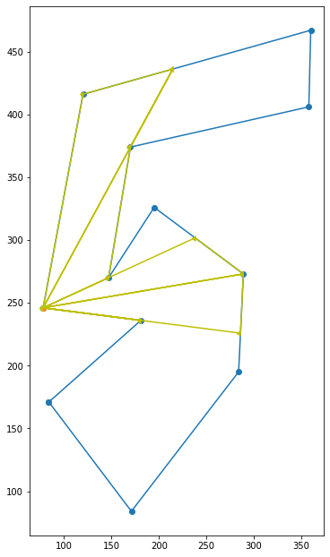

The problem has arised from the art gallery problem in which we want to find the minimal number of guards needed to place into the gallery to keep an eye on the whole object.
Transforming it into geometry we choose the vertices (guards) which can see some area like the light going into every corner (sends rays) until it hits the wall.
In the vertex visibility problem we find this lightened area for one point (guard/light source) of the initial polygon. For the output we get the visibility polygon.
The first idea I had to solve the problem is to divide the perimeter of the polygon into pixels and for each pixel check if it is visible from the light source L. This finds us all rays from the light and actually ‘draws’ the output.
Checking if the pixel p is visible means finding the intersections between (L, p) and (e1, e2) for all edges e \in E besides the one on which p lies. If none of the edges crosses the segment (L, p), then the p is visible, otherwise it is not. Afterwards I can draw the whole area by connecting the collinear dots on the edges with the light source. I will get many triangles which together make a whole visibility polygon.
The intersections I check using the cross product. To make the implementation simpler I would divide the crossings into two types: (at least) one end of the edge is on the segment (L, p), two ends lie on two sides of the segment (L, p), none of them touches the segment.
But this solution is very slow - it requires dividing the perimeter into single pixels!
I decided to implement a different solution. For each edge of the polygon as the whole, the algorithm checks how much it is visible from the light source. It intersects all vertices with that one edge to find which subsegment of the edge is visible.
It is important to prove that there is always exactly one (sometimes with length 0) subsection of the edge visible from the vertex light.
Let's assume we have two visible subsections of the edge (a,d): (a,b) and (c,d) and there is an invisible subsection (b,c) between them (the edge could be longer in both directions but it doesn’t change the proof).
It means that (b,c) is hidden by some parts of the polygon’s perimeter inside the triangle (L, b, c). But they have to be connected with the rest of the perimeter! Especially with the edge (a,d). But to connect them together the parts from the triangle must enter the yellow triangles - but then the subsections (a,b) and (c,d) will not be fully visible - contradiction.
Having this fact, for each edge we can check how other edges and vertices interfere with the light for this edge. There are a few possibilities:
Take the edge and check which vertices restrict the edge’s visibility from both sides. So we can just check each vertex:
Then choose two biggest restrictors and compute the intersections with the light rays going through them. Please take a look at the example and how the left upper edge is limited by different acute angles > < created by vertices.
Please take a look at the example of how the upper edge is limited by different vertices from both sides.
We repeat this procedure for all edges separately and then we create the visibility polygon by taking all ends of visible segments of edges in the initial polygon’s order of edges.
The first linear algorithm for the visibility problem was presented by ElGindy and Avis in 1980, but it was quite complicated with many cases and 3 stacks to juggle vertices between. Afterwards D.T. Lee improved that solution and again in 1985 Joe and Simpson simplified it even more.
However, in 1987 the last authors found the test case for which their algorithm and all above don’t work and they wrote the correction of the algorithm which solves it.
I have implemented the last version based on Joe and Simpson’s work from 1985 explained in Art Gallery Theorems and Algorithms by Joseph O'Rourke. Afterwards I also found the test case for which it doesn’t work and tried to solve it on my own but I couldn’t finish it. Therefore I left my implementation of my individual solution for our application and put this linear algorithm as the appendix. It is written in python and I attach it in this form as it is not added to our application. I have chosen python for the draft version, because it easier to experiment with the code and divide it into the chunks what helped me to implement this paper’s work.
We analyze all vertices of the polygon’s perimeter one by one. Looking at the next vertex we keep the stack of visible vertices until now without any predictions about the next boundaries. We have 3 different moves:
We decide about the next move regarding the angles between vertices, orientation of the next boundaries and the intersections between the current/last point (light ray) and processed edges.
Finally the visibility polygon consists of the vertices from the stack.
In the book it is said that the we count polar angle of vi with respect to x from the definition:
where σ is the orientation determinant of x, vi-1 and vi, I had concerns how to measure this angle - how to treat negative values and how to respect the concave angles. Finally, I computed the angle from the difference of atan2 functions, I increased the values lower than 0 and always take a convex angle between the points.
Key: blue - polygon, green - visibility area, orange - light
During some tests I found a case where my implementation doesn’t work. I tried to fix it and understand how it should work in the algorithm, but I couldn’t. Then I realized there is a correction to the algorithm from 1987. I checked that the author’s counter-test also fails and I think it is due to the similar reason of ‘too much winding’.
Key: blue - polygon, red - polygon vertices, green - visibility area, purple - temporary visible vertices added to the stack.
I have implemented two different algorithms of finding the visibility polygon. Now this work can be used for the art gallery problem as it helps to analyze if the subset of chosen vertices is enough to lighten the whole area. This requires additional merging of separate visibility polygons.
At the end I attach the link to my implementation here. I also generated this report in pdf.